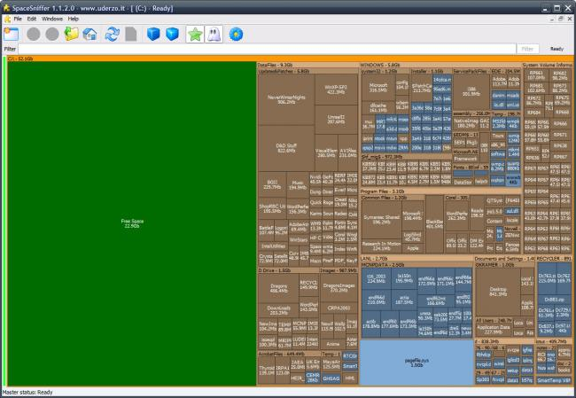

When we hired new salespeople, I set up their laptops, removing factory-installed bloatware, creating standard users for them, teaching them best practices for updating their software and avoiding malicious emails and downloads. I get multiple requests a week for solutions to minor technical problems, mostly involving the use of software and the printer.
But we did have a very interesting incident occur that I successfully resolved.
At 4:30 on a Friday, a co-worker asked me to come look at her laptop, that it wasn't working correctly. I asked for more information on what was wrong, and was told that the machine was reporting the hard drive was completely full and she couldn't download her email attachments.
At the time, the computer was 2 weeks out of the box and had a 500G hard drive, so I asked to see it myself.
A glance at the My Computer window confirmed that the C Drive was, indeed, completely full.
I'm not familiar enough with Windows to jump into the command line like I can on a Unix-based machine, so I went back to my computer and searched for a solution to find giant files on a Windows OS.
A thread on stack overflow pointed me towards a program called Spacesniffer.exe which can be run from a usb and graphically displays the contents of the hard drive, with the largest files taking up the most space in the Spacesniffer window. It quickly became apparent where the problem was, almost the entire display was filled with one square labeled as a temp log file. 440 Gigabytes.
The spacesniffer window looks like this, except her's had no free space. Just a giant block of one file.
I noted the path of the file and used the My Computer dialogue to navigate to the location of the file, ...and it wasn't there. It was in a hidden directory.
Resolving to becoming more comfortable with the command line in windows, I navigated through settings windows to display hidden files and directories. Went back to the giant log file and deleted it.
Before giving back her computer, I updated her anti-virus, ran it, and cleaned up the adware and spammy browser extensions that were cluttering her computer.
End result was positive, she was able to use her computer again as usual and it was a good learning experience and encouraged me to learn some basics of the windows command line.
Previous Project Back to Portfolio Next Project